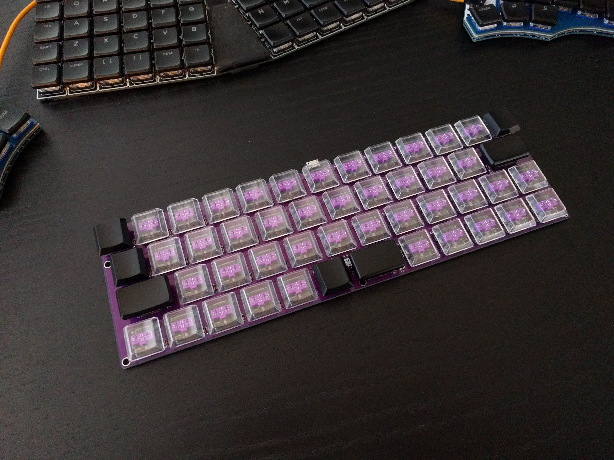
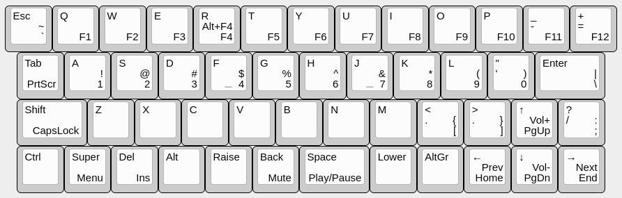

Parts Arrived¶
Published on 2021-10-06 in Nudge Keyboard.
Finally the parts have arrived (Aliexpress decided to get creative with merging orders), and I was able to assemble this keyboard.
It feels good, but after some testing, I decided to modify the layout slightly:
I moved the backspace next to space, to put the equals/plus key in a more traditional place. I also moved the media buttons onto arrows, to make them easier to remember. Del got moved to where Ins is, and Ins went to second layer. F11 and F12 also went to more intuitive places. This way you don’t have to wonder where the equals key is, but you do have to get used to the new location of backspace, which I think is fine, as it prepares you for the split keyboards that usually have backspace somewhere in that region as well.
There are seven keys that don’t have anything on the non-default layers, that could be used for custom macros, but I left them free for now. The third layer is all free as well.